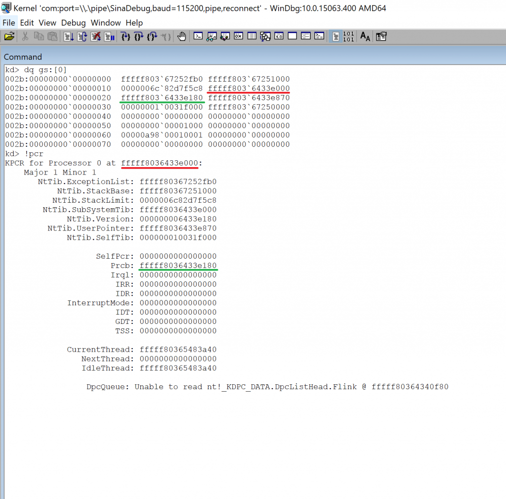
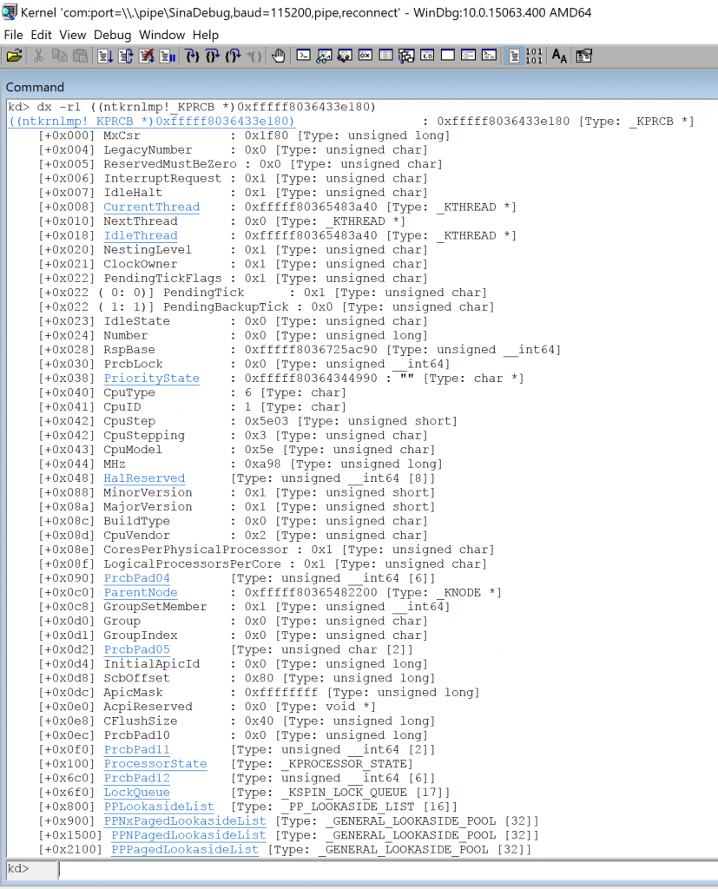
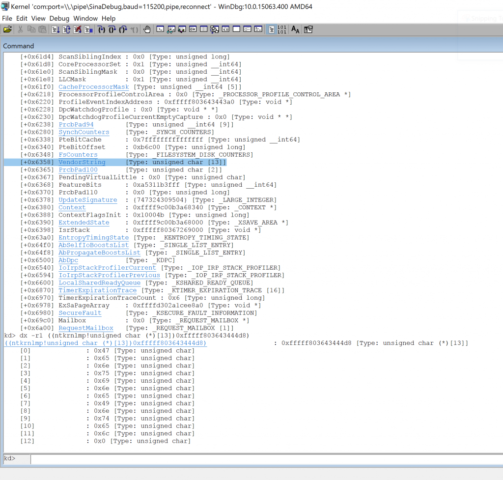
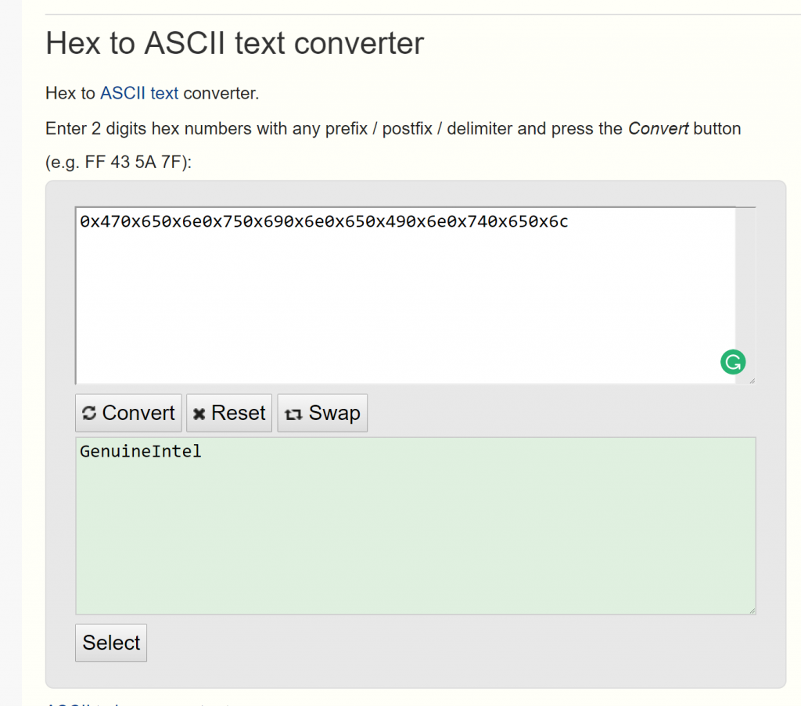
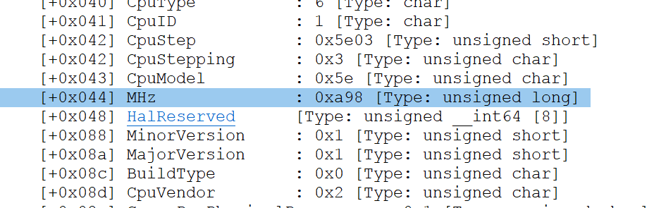
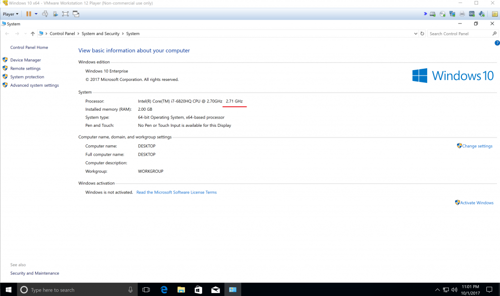
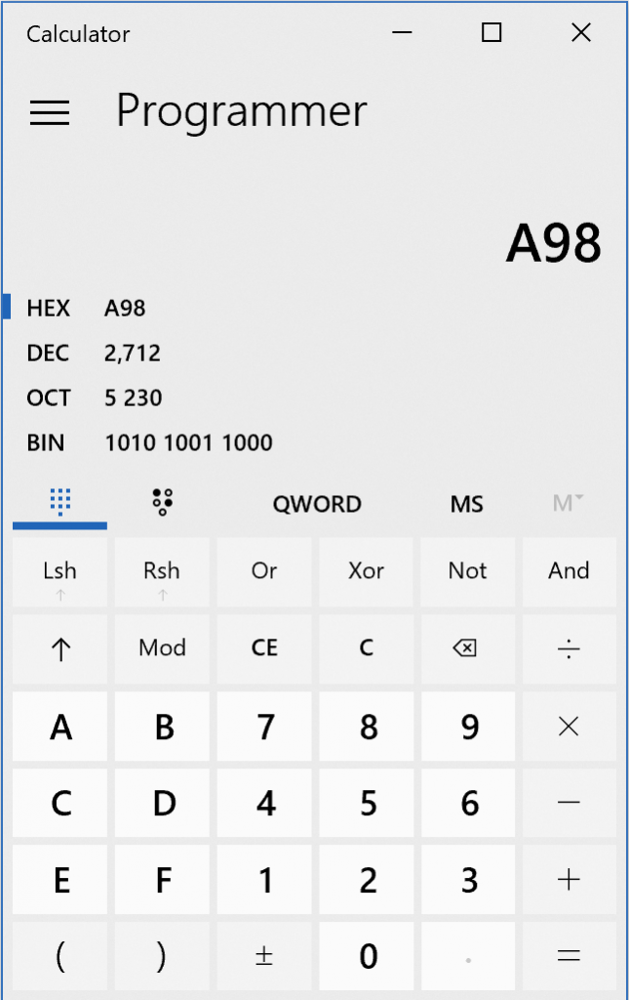
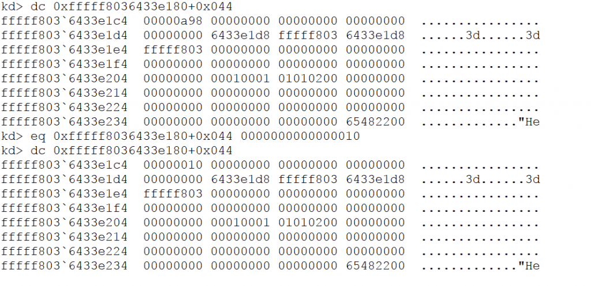
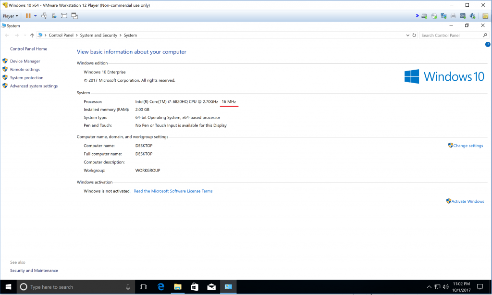

In this post, I’m gonna show you how you can fool windows about its internal structure and sometimes give it wrong information about its internal capabilities or internal information which can bring you a lot of fun. (At least for me !)
But don’t do that it can hurt your system actually but this post is about how to change CPU Capacity measurement of Windows and see its result in user-mode programs.
There is a good article here which gives you lots of information. I recommend seeing all its structures before start reading rest of this post.
Ok, As you know windows contains lots of structures which stores its internal information about the system which is running on and almost all of this information can be found by using NtQuerySystemInformation and you can see all about it on MSDN (In the future post I will give you more details about this function.)
I’m gonna use nt!_KPCR and Code Machine describes it well :
nt!_KPCR
KPCR represents the Kernel Processor Control Region. The KPCR contains per-CPU information which is shared by the kernel and the HAL. There are as many KPCR in the system as there are CPUs.
The KPCR of the current CPU is always accessible at fs:[0] on the x86 systems and gs:[0] on x64 systems. Commonly used kernel functions like PsGetCurrentProcess() and KeGetCurrentThread() retrieve information from the KPCR using the FS/GS relative accesses.
The Prcb field contains an embedded KPRCB structure that represents the Kernel Processor Control Block.
The debugger’s “!pcr” command displays partial contents of the PCR.
You can see all Windbg gives to you from Windows symbols :
1
2
3
4
5
6
7
8
9
10
11
12
13
14
15
16
17
18
19
20
21
22
23
24
25
26
27
28
lkd> dt nt!_KPCR
+0x000 NtTib : _NT_TIB
+0x000 GdtBase : Ptr64 _KGDTENTRY64
+0x008 TssBase : Ptr64 _KTSS64
+0x010 UserRsp : Uint8B
+0x018 Self : Ptr64 _KPCR
+0x020 CurrentPrcb : Ptr64 _KPRCB
+0x028 LockArray : Ptr64 _KSPIN_LOCK_QUEUE
+0x030 Used_Self : Ptr64 Void
+0x038 IdtBase : Ptr64 _KIDTENTRY64
+0x040 Unused : [2] Uint8B
+0x050 Irql : UChar
+0x051 SecondLevelCacheAssociativity : UChar
+0x052 ObsoleteNumber : UChar
+0x053 Fill0 : UChar
+0x054 Unused0 : [3] Uint4B
+0x060 MajorVersion : Uint2B
+0x062 MinorVersion : Uint2B
+0x064 StallScaleFactor : Uint4B
+0x068 Unused1 : [3] Ptr64 Void
+0x080 KernelReserved : [15] Uint4B
+0x0bc SecondLevelCacheSize : Uint4B
+0x0c0 HalReserved : [16] Uint4B
+0x100 Unused2 : Uint4B
+0x108 KdVersionBlock : Ptr64 Void
+0x110 Unused3 : Ptr64 Void
+0x118 PcrAlign1 : [24] Uint4B
+0x180 Prcb : _KPRCB
There are lots of great information about Idt , IRQL in the above structure so it must be an important one!
Look at the last one, which is Prcb!
Mark Russinovich in Windows Internals wrote “The PCR and PRCB contain information about the state of each processor in the system such as current IRQL, a pointer to the hardware Idt, the currently running thread, and the next thread selected to run. The kernel and the HAL use this information to perform architecture-specific and machine-specific actions.”.
So all we need is seeing what we can do with such a structure. Let me show you the result of windbg symbols.
1
2
3
4
5
6
7
8
9
10
11
12
13
14
15
16
17
18
19
20
21
22
23
24
25
26
27
28
29
30
31
32
33
34
35
36
37
38
39
40
41
42
43
44
45
46
47
48
49
50
51
52
53
54
55
56
57
58
59
60
61
62
63
64
65
66
67
68
69
70
71
72
73
74
75
76
77
78
79
80
81
82
83
84
85
86
87
88
89
90
91
92
93
94
95
96
97
98
99
100
101
102
103
104
105
106
107
108
109
110
111
112
113
114
115
116
117
118
119
120
121
122
123
124
125
126
127
128
129
130
131
132
133
134
135
136
137
138
139
140
141
142
143
144
145
146
147
148
149
150
151
152
153
154
155
156
157
158
159
160
161
162
163
164
165
166
167
168
169
170
171
172
173
174
175
176
177
178
179
180
181
182
183
184
185
186
187
188
189
190
191
192
193
194
195
196
197
198
199
200
201
202
203
204
205
206
207
208
209
210
211
212
213
214
215
216
217
218
219
220
221
222
223
224
225
226
227
228
229
230
231
232
233
234
235
236
237
238
239
240
241
242
243
244
245
246
247
248
249
250
251
252
253
254
255
256
257
258
259
260
261
262
263
264
265
kd> dt nt!_KPRCB
+0x000 MxCsr : Uint4B
+0x004 LegacyNumber : UChar
+0x005 ReservedMustBeZero : UChar
+0x006 InterruptRequest : UChar
+0x007 IdleHalt : UChar
+0x008 CurrentThread : Ptr64 _KTHREAD
+0x010 NextThread : Ptr64 _KTHREAD
+0x018 IdleThread : Ptr64 _KTHREAD
+0x020 NestingLevel : UChar
+0x021 ClockOwner : UChar
+0x022 PendingTickFlags : UChar
+0x022 PendingTick : Pos 0, 1 Bit
+0x022 PendingBackupTick : Pos 1, 1 Bit
+0x023 IdleState : UChar
+0x024 Number : Uint4B
+0x028 RspBase : Uint8B
+0x030 PrcbLock : Uint8B
+0x038 PriorityState : Ptr64 Char
+0x040 CpuType : Char
+0x041 CpuID : Char
+0x042 CpuStep : Uint2B
+0x042 CpuStepping : UChar
+0x043 CpuModel : UChar
+0x044 MHz : Uint4B
+0x048 HalReserved : [8] Uint8B
+0x088 MinorVersion : Uint2B
+0x08a MajorVersion : Uint2B
+0x08c BuildType : UChar
+0x08d CpuVendor : UChar
+0x08e CoresPerPhysicalProcessor : UChar
+0x08f LogicalProcessorsPerCore : UChar
+0x090 PrcbPad04 : [6] Uint8B
+0x0c0 ParentNode : Ptr64 _KNODE
+0x0c8 GroupSetMember : Uint8B
+0x0d0 Group : UChar
+0x0d1 GroupIndex : UChar
+0x0d2 PrcbPad05 : [2] UChar
+0x0d4 InitialApicId : Uint4B
+0x0d8 ScbOffset : Uint4B
+0x0dc ApicMask : Uint4B
+0x0e0 AcpiReserved : Ptr64 Void
+0x0e8 CFlushSize : Uint4B
+0x0ec PrcbPad10 : Uint4B
+0x0f0 PrcbPad11 : [2] Uint8B
+0x100 ProcessorState : _KPROCESSOR_STATE
+0x6c0 PrcbPad12 : [6] Uint8B
+0x6f0 LockQueue : [17] _KSPIN_LOCK_QUEUE
+0x800 PPLookasideList : [16] _PP_LOOKASIDE_LIST
+0x900 PPNxPagedLookasideList : [32] _GENERAL_LOOKASIDE_POOL
+0x1500 PPNPagedLookasideList : [32] _GENERAL_LOOKASIDE_POOL
+0x2100 PPPagedLookasideList : [32] _GENERAL_LOOKASIDE_POOL
+0x2d00 PrcbPad20 : Uint8B
+0x2d08 DeferredReadyListHead : _SINGLE_LIST_ENTRY
+0x2d10 MmPageFaultCount : Int4B
+0x2d14 MmCopyOnWriteCount : Int4B
+0x2d18 MmTransitionCount : Int4B
+0x2d1c MmDemandZeroCount : Int4B
+0x2d20 MmPageReadCount : Int4B
+0x2d24 MmPageReadIoCount : Int4B
+0x2d28 MmDirtyPagesWriteCount : Int4B
+0x2d2c MmDirtyWriteIoCount : Int4B
+0x2d30 MmMappedPagesWriteCount : Int4B
+0x2d34 MmMappedWriteIoCount : Int4B
+0x2d38 KeSystemCalls : Uint4B
+0x2d3c KeContextSwitches : Uint4B
+0x2d40 PrcbPad40 : Uint4B
+0x2d44 CcFastReadNoWait : Uint4B
+0x2d48 CcFastReadWait : Uint4B
+0x2d4c CcFastReadNotPossible : Uint4B
+0x2d50 CcCopyReadNoWait : Uint4B
+0x2d54 CcCopyReadWait : Uint4B
+0x2d58 CcCopyReadNoWaitMiss : Uint4B
+0x2d5c IoReadOperationCount : Int4B
+0x2d60 IoWriteOperationCount : Int4B
+0x2d64 IoOtherOperationCount : Int4B
+0x2d68 IoReadTransferCount : _LARGE_INTEGER
+0x2d70 IoWriteTransferCount : _LARGE_INTEGER
+0x2d78 IoOtherTransferCount : _LARGE_INTEGER
+0x2d80 PacketBarrier : Int4B
+0x2d84 TargetCount : Int4B
+0x2d88 IpiFrozen : Uint4B
+0x2d90 IsrDpcStats : Ptr64 Void
+0x2d98 DeviceInterrupts : Uint4B
+0x2d9c LookasideIrpFloat : Int4B
+0x2da0 InterruptLastCount : Uint4B
+0x2da4 InterruptRate : Uint4B
+0x2da8 LastNonHrTimerExpiration : Uint8B
+0x2db0 PrcbPad41 : [20] Uint4B
+0x2e00 DpcData : [2] _KDPC_DATA
+0x2e50 DpcStack : Ptr64 Void
+0x2e58 MaximumDpcQueueDepth : Int4B
+0x2e5c DpcRequestRate : Uint4B
+0x2e60 MinimumDpcRate : Uint4B
+0x2e64 DpcLastCount : Uint4B
+0x2e68 ThreadDpcEnable : UChar
+0x2e69 QuantumEnd : UChar
+0x2e6a DpcRoutineActive : UChar
+0x2e6b IdleSchedule : UChar
+0x2e6c DpcRequestSummary : Int4B
+0x2e6c DpcRequestSlot : [2] Int2B
+0x2e6c NormalDpcState : Int2B
+0x2e6e ThreadDpcState : Int2B
+0x2e6c DpcNormalProcessingActive : Pos 0, 1 Bit
+0x2e6c DpcNormalProcessingRequested : Pos 1, 1 Bit
+0x2e6c DpcNormalThreadSignal : Pos 2, 1 Bit
+0x2e6c DpcNormalTimerExpiration : Pos 3, 1 Bit
+0x2e6c DpcNormalDpcPresent : Pos 4, 1 Bit
+0x2e6c DpcNormalLocalInterrupt : Pos 5, 1 Bit
+0x2e6c DpcNormalSpare : Pos 6, 10 Bits
+0x2e6c DpcThreadActive : Pos 16, 1 Bit
+0x2e6c DpcThreadRequested : Pos 17, 1 Bit
+0x2e6c DpcThreadSpare : Pos 18, 14 Bits
+0x2e70 LastTimerHand : Uint4B
+0x2e74 LastTick : Uint4B
+0x2e78 ClockInterrupts : Uint4B
+0x2e7c ReadyScanTick : Uint4B
+0x2e80 InterruptObject : [256] Ptr64 Void
+0x3680 TimerTable : _KTIMER_TABLE
+0x5880 DpcGate : _KGATE
+0x5898 PrcbPad52 : Ptr64 Void
+0x58a0 CallDpc : _KDPC
+0x58e0 ClockKeepAlive : Int4B
+0x58e4 PrcbPad60 : [2] UChar
+0x58e6 NmiActive : Uint2B
+0x58e8 DpcWatchdogPeriod : Int4B
+0x58ec DpcWatchdogCount : Int4B
+0x58f0 KeSpinLockOrdering : Int4B
+0x58f4 DpcWatchdogProfileCumulativeDpcThreshold : Uint4B
+0x58f8 CachedPtes : Ptr64 Void
+0x5900 WaitListHead : _LIST_ENTRY
+0x5910 WaitLock : Uint8B
+0x5918 ReadySummary : Uint4B
+0x591c AffinitizedSelectionMask : Int4B
+0x5920 QueueIndex : Uint4B
+0x5924 PrcbPad75 : [3] Uint4B
+0x5930 TimerExpirationDpc : _KDPC
+0x5970 ScbQueue : _RTL_RB_TREE
+0x5980 DispatcherReadyListHead : [32] _LIST_ENTRY
+0x5b80 InterruptCount : Uint4B
+0x5b84 KernelTime : Uint4B
+0x5b88 UserTime : Uint4B
+0x5b8c DpcTime : Uint4B
+0x5b90 InterruptTime : Uint4B
+0x5b94 AdjustDpcThreshold : Uint4B
+0x5b98 DebuggerSavedIRQL : UChar
+0x5b99 GroupSchedulingOverQuota : UChar
+0x5b9a DeepSleep : UChar
+0x5b9b PrcbPad80 : [5] UChar
+0x5ba0 DpcTimeCount : Uint4B
+0x5ba4 DpcTimeLimit : Uint4B
+0x5ba8 PeriodicCount : Uint4B
+0x5bac PeriodicBias : Uint4B
+0x5bb0 AvailableTime : Uint4B
+0x5bb4 KeExceptionDispatchCount : Uint4B
+0x5bb8 ReadyThreadCount : Uint4B
+0x5bc0 StartCycles : Uint8B
+0x5bc8 TaggedCyclesStart : Uint8B
+0x5bd0 TaggedCycles : [2] Uint8B
+0x5be0 GenerationTarget : Uint8B
+0x5be8 AffinitizedCycles : Uint8B
+0x5bf0 ImportantCycles : Uint8B
+0x5bf8 UnimportantCycles : Uint8B
+0x5c00 ReadyQueueExpectedRunTime : Uint8B
+0x5c08 PrcbPad81 : [21] Uint4B
+0x5c5c DpcWatchdogProfileSingleDpcThreshold : Uint4B
+0x5c60 MmSpinLockOrdering : Int4B
+0x5c64 PageColor : Uint4B
+0x5c68 NodeColor : Uint4B
+0x5c6c NodeShiftedColor : Uint4B
+0x5c70 SecondaryColorMask : Uint4B
+0x5c74 PrcbPad83 : Uint4B
+0x5c78 CycleTime : Uint8B
+0x5c80 Cycles : [4] [2] Uint8B
+0x5cc0 PrcbPad84 : [16] Uint4B
+0x5d00 CcFastMdlReadNoWait : Uint4B
+0x5d04 CcFastMdlReadWait : Uint4B
+0x5d08 CcFastMdlReadNotPossible : Uint4B
+0x5d0c CcMapDataNoWait : Uint4B
+0x5d10 CcMapDataWait : Uint4B
+0x5d14 CcPinMappedDataCount : Uint4B
+0x5d18 CcPinReadNoWait : Uint4B
+0x5d1c CcPinReadWait : Uint4B
+0x5d20 CcMdlReadNoWait : Uint4B
+0x5d24 CcMdlReadWait : Uint4B
+0x5d28 CcLazyWriteHotSpots : Uint4B
+0x5d2c CcLazyWriteIos : Uint4B
+0x5d30 CcLazyWritePages : Uint4B
+0x5d34 CcDataFlushes : Uint4B
+0x5d38 CcDataPages : Uint4B
+0x5d3c CcLostDelayedWrites : Uint4B
+0x5d40 CcFastReadResourceMiss : Uint4B
+0x5d44 CcCopyReadWaitMiss : Uint4B
+0x5d48 CcFastMdlReadResourceMiss : Uint4B
+0x5d4c CcMapDataNoWaitMiss : Uint4B
+0x5d50 CcMapDataWaitMiss : Uint4B
+0x5d54 CcPinReadNoWaitMiss : Uint4B
+0x5d58 CcPinReadWaitMiss : Uint4B
+0x5d5c CcMdlReadNoWaitMiss : Uint4B
+0x5d60 CcMdlReadWaitMiss : Uint4B
+0x5d64 CcReadAheadIos : Uint4B
+0x5d68 MmCacheTransitionCount : Int4B
+0x5d6c MmCacheReadCount : Int4B
+0x5d70 MmCacheIoCount : Int4B
+0x5d74 PrcbPad91 : [3] Uint4B
+0x5d80 PowerState : _PROCESSOR_POWER_STATE
+0x5f58 ScbList : _LIST_ENTRY
+0x5f68 ForceIdleDpc : _KDPC
+0x5fa8 PrcbPad92 : [18] Uint4B
+0x5ff0 KeAlignmentFixupCount : Uint4B
+0x5ff8 DpcWatchdogDpc : _KDPC
+0x6038 DpcWatchdogTimer : _KTIMER
+0x6078 Cache : [5] _CACHE_DESCRIPTOR
+0x60b4 CacheCount : Uint4B
+0x60b8 CachedCommit : Uint4B
+0x60bc CachedResidentAvailable : Uint4B
+0x60c0 HyperPte : Ptr64 Void
+0x60c8 WheaInfo : Ptr64 Void
+0x60d0 EtwSupport : Ptr64 Void
+0x60e0 InterruptObjectPool : _SLIST_HEADER
+0x60f0 HypercallPageList : _SLIST_HEADER
+0x6100 HypercallCachedPages : Ptr64 Void
+0x6108 VirtualApicAssist : Ptr64 Void
+0x6110 StatisticsPage : Ptr64 Uint8B
+0x6118 PackageProcessorSet : _KAFFINITY_EX
+0x61c0 SharedReadyQueueMask : Uint8B
+0x61c8 SharedReadyQueue : Ptr64 _KSHARED_READY_QUEUE
+0x61d0 SharedQueueScanOwner : Uint4B
+0x61d4 ScanSiblingIndex : Uint4B
+0x61d8 CoreProcessorSet : Uint8B
+0x61e0 ScanSiblingMask : Uint8B
+0x61e8 LLCMask : Uint8B
+0x61f0 CacheProcessorMask : [5] Uint8B
+0x6218 ProcessorProfileControlArea : Ptr64 _PROCESSOR_PROFILE_CONTROL_AREA
+0x6220 ProfileEventIndexAddress : Ptr64 Void
+0x6228 DpcWatchdogProfile : Ptr64 Ptr64 Void
+0x6230 DpcWatchdogProfileCurrentEmptyCapture : Ptr64 Ptr64 Void
+0x6238 PrcbPad94 : [9] Uint8B
+0x6280 SynchCounters : _SYNCH_COUNTERS
+0x6338 PteBitCache : Uint8B
+0x6340 PteBitOffset : Uint4B
+0x6348 FsCounters : _FILESYSTEM_DISK_COUNTERS
+0x6358 VendorString : [13] UChar
+0x6365 PrcbPad100 : [2] UChar
+0x6367 PendingVirtualLittle : UChar
+0x6368 FeatureBits : Uint8B
+0x6370 PrcbPad110 : Uint4B
+0x6378 UpdateSignature : _LARGE_INTEGER
+0x6380 Context : Ptr64 _CONTEXT
+0x6388 ContextFlagsInit : Uint4B
+0x6390 ExtendedState : Ptr64 _XSAVE_AREA
+0x6398 IsrStack : Ptr64 Void
+0x63a0 EntropyTimingState : _KENTROPY_TIMING_STATE
+0x64f0 AbSelfIoBoostsList : _SINGLE_LIST_ENTRY
+0x64f8 AbPropagateBoostsList : _SINGLE_LIST_ENTRY
+0x6500 AbDpc : _KDPC
+0x6540 IoIrpStackProfilerCurrent : _IOP_IRP_STACK_PROFILER
+0x6594 IoIrpStackProfilerPrevious : _IOP_IRP_STACK_PROFILER
+0x6600 LocalSharedReadyQueue : _KSHARED_READY_QUEUE
+0x6870 TimerExpirationTrace : [16] _KTIMER_EXPIRATION_TRACE
+0x6970 TimerExpirationTraceCount : Uint4B
+0x6978 ExSaPageArray : Ptr64 Void
+0x6980 SecureFault : _KSECURE_FAULT_INFORMATION
+0x69c0 Mailbox : Ptr64 _REQUEST_MAILBOX
+0x6a00 RequestMailbox : [1] _REQUEST_MAILBOX
Looking at the above structure shows a lot of great information about the system processor.You can find something like Current and Next Thread _KTHREAD, all information about CPU like type and capacity and manufacture company, DPC, Cycles, User-mode and Kernel-mode times and etc.
By the way, you now know that windows stores some of its internal information about CPU in nt!_PRCB and you should know find where this structure is located, I’m running an AMD64 version of Windows so it’s time to use gs:[0] in order to get the location of nt!_KPCR structure.
By using the following command you can get gs:[0] values :
1
dq gs:[0]
you can also use !pcr which gives you almost the same result :)

So, now we have where the _KPCR is located and now we should simply use :
1
dt <Address> nt!_KPCR
And after finding the pcrb now we should use dt in order to map the result into the _kpcrb structure.

If you want to be sure that you are in a right place you can search for Vendor string as follows :

It gives you kinds of hex which is equal to “GenuineIntel” and this is, of course, my CPU vendor.

After this, we know that we are in a right place so let see other fields in order to find something interesting!
After studying this structure now I see something that is so familiar to me and that is “Mhz”.

Can you see my CPU’s Mhz value ?! Let me see my windows properties.

Ok, this is what we see previously, Doesn’t it ?!

This value (2.71 GHz) exactly equals to 0xA98 so changing this value must be interesting.
I find this value and changing it to 0x10 which is equal to 16 in decimal.

So we modified the value from 0x98 to 0x10 and now we want to see if it takes effect in system information or not, so let’s view system properties again.

That’s it, guys!
You can see we changed windows properties and now it says that you have a 16 Mhz CPU.Of course, this was an example of what we can do with prcb and it doesn’t affect on windows but you can do many other things by modifying this structure like changing threads or block a thread but keep in mind that editing this structure in a wrong way almost always causes the Blue Screen Of Dead.
Thanks for reading.
Comments powered by Disqus.